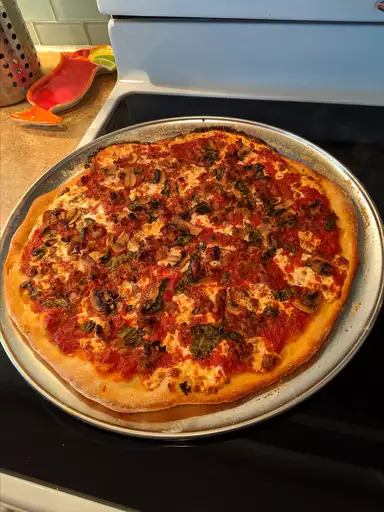

Brick-Oven Pizza (Brooklyn Style)

This simple brick-oven pizza recipe has been made famous by several well-known, Brooklyn wood-fire pizzerias. Best accompanied by ice-cold, pilsner-style lager beer
Ingredients
Dough:
- ¼ cup warm water
- 1 teaspoon active dry yeast
- 1 cup cold water
- 1 teaspoon salt
- 3 cups bread flour
- 1 tablespoon extra-virgin olive oil
Toppings:
- 6 ounces low moisture mozzarella cheese, thinly sliced
- ½ teaspoon dried oregano